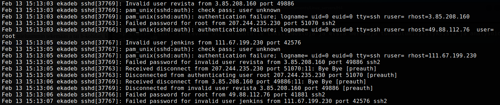

Rosvot porteilla
Tehtävänä oli tarkastella palvelimen lokitiedostoja ja etsiä merkkejä tunkeutumisyrityksistä ja analysoida niitä. Tarkastelin /var/log/auth.log tiedostoa ja huomasin, että palvelimelleni on yritetty murtautua lähes joka sekuntti siitä asti kun sain sen toimintaan. Kuvakaappauksessa pieni pätkä lokista:
Koska kirjautumisyrityksiä oli niin monta ja tasaiseen tahtiin, uskon, että käynnissä oli (on), jonkin sortin brute force ja dictionary -hyökkäys, jonka tavoitteena oli päästä palvelimelle. Esimerkiksi kuvakaappauksen viimeisellä rivillä näkee miten IP osoitteesta 111.67.199.230 porttiin 42576 on yritetty ottaa ssh yhteys käyttäjänimellä jenkins.
Yhteenveto
Lokia tarkastellessani minulle vahvistui käsitys siitä miksi minimi määrä tietoa kohteesta ja vahva salasana ovat tärkeitä.
- Vahva salasana: bruteforce hyökkäyksessä ohjelma kokeilee kaiken mahdollisen annettujen parametrien mukaan. Esimerkiksi 4 numeroinen PIN koodi murtuisi sekunneissa.
- Minimi määrä tietoa: internetistä löytyy kymmenien gigatavujen tekstitiedostoja sanakirjahyökkäyksiä varten. Pelkästään se, että paljastaa palvelimen nimessä mistä maasta ylläpitäjä on kotoisin, saattaa rajata tekniikoita tai lyhentää murtautumiseen käytettävää aikaa - tietyn maalaiset käyttäjänimet tai salasanana käytetyt sanat.